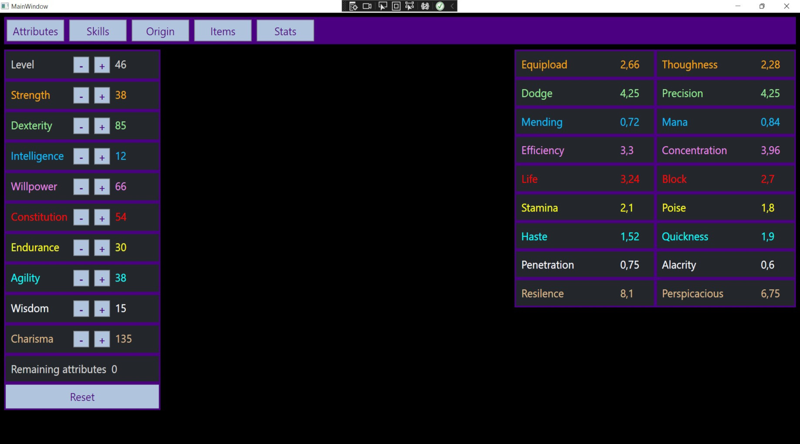
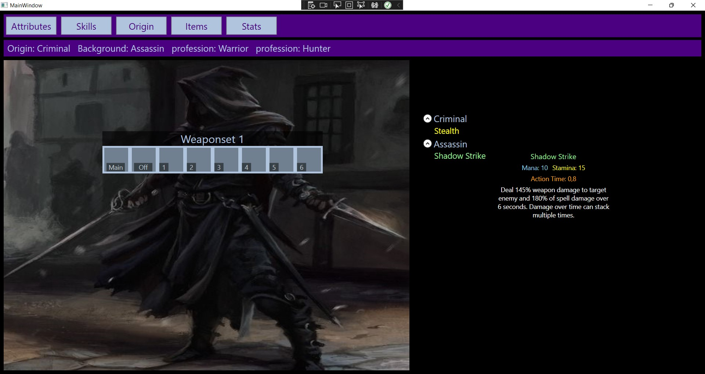
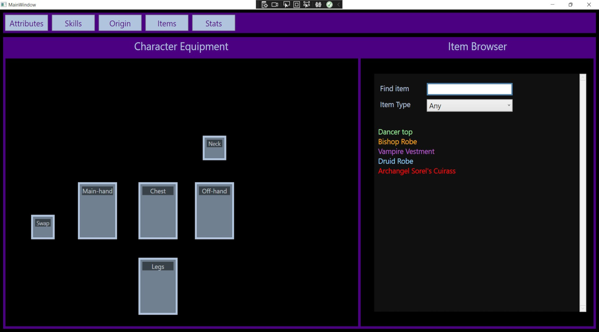
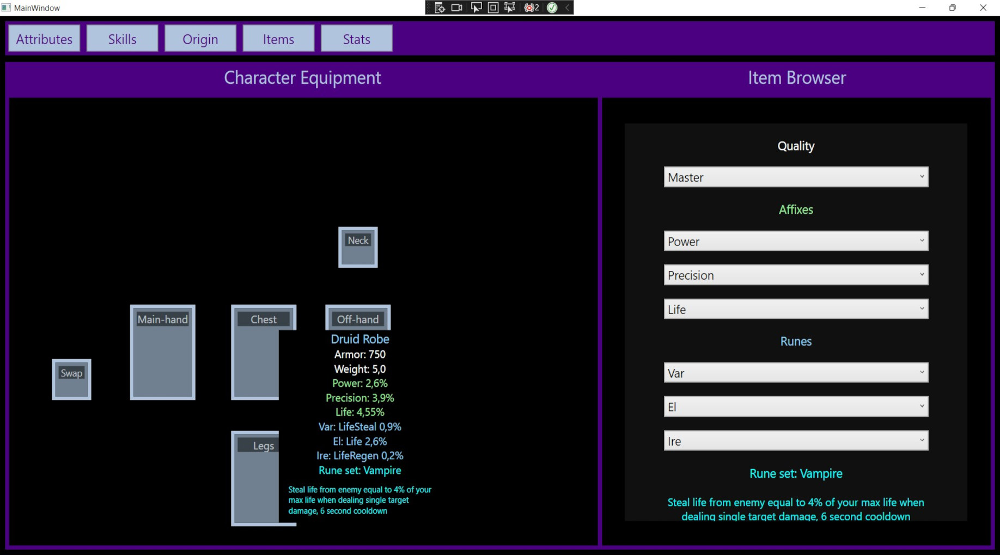

Build Planner
Build planner on ohjelma, jolla voi suunitella oman roolipeli hahmonsa, huom. ohjelma on vielä keskeneräinen. Tämä ohjelma ei ole tehty mihinkään oikeaan peliin. Ohjelma toiminnallisuus on toteutettu C# ohjelmointi kielellä ja graaffinen puoli on toteutettu xaml markup kielellä. Ohjelma koostuu viidestä sivusta jotka ovat, attributes, origin, skills, items ja stats.
Attributes

Attributes sivulla voidaan määrittää hahmon attribuutit, joita on yhteensä yhdeksän. Yksi taso lisää
käytettävissä olevia
attribuutti pisteitä, joita voi sijoittaa attribuutteihin haluamallansa tavalla. Kaikki muutokset
tallennetaan olioon: private Attributes att = new Attributes(). Olion sisällä on sanakirja attributes = new Dictionary
Origin

Origin sivulla voi määrittää hahmon alkuperän(Origin) ja valita haluttuja taitoja puusta, huom. taito puuta ei ole vielä tehty. Ammatit(Professions) on myös valittavissa tällä sivulla. Hahmon tausta valitaan alkuperän lisäksi. Tausta valikoima perustuu valittuun alkuperään. Alkuperän ja taustan lisäksi on tarjolla eri ammatteja. Tarjolla olevista ammateista voi valita kaksi eri ammattia. Kaikki tämän sivun tiedot tallentuu attributes att olioon.
Skills
Skills sivulla voidaan määrittää mitä taitoja hahmo omistaa ja muokata niitä haluammallaan tavalla, tämäkin toiminnallisuus on keskeneräinen. Tällähetkellä taitoja voi valita, mutta niitä ei voi muokata. Taidotkin tallennetaan samaan olioon kuin attributes ja origin.
Items
 Items sivulla määritellään hahmon tavarat. Esineet ovat kolmessa pääryhmässä panssarit(armor), aseet(weapon) ja korut(jewelry). Tavaroita on useita eri tyyppejä: normal, runic, cursed, blessed ja artifact. Ohjelmassa pystyt etsimään tavaroita nimellä ja tyypillä. Tavaroiden laadun voi määritellä quality kohdassa, affix otsikon alla on perus tavaran attribuutit, ja viimeisenä on riimut, kiroukset, siunaukset ja artefakti ominaisuudet. Tehdyn tavaran näkee kuin raahaa hiiren kyseisen tavaran paikan päälle.
Stats
Tämä sivu on aloittamaton, mutta siihen kuuluu yhteenveto kaikista valinnoista.